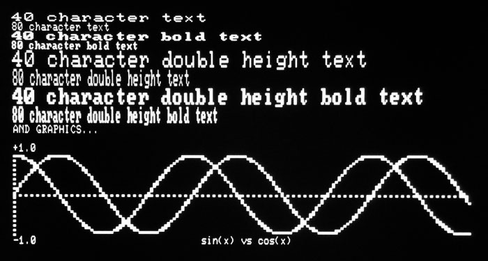
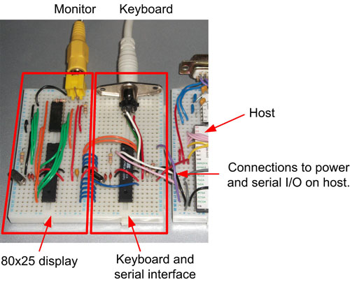
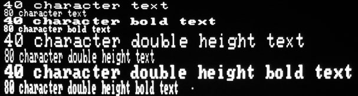
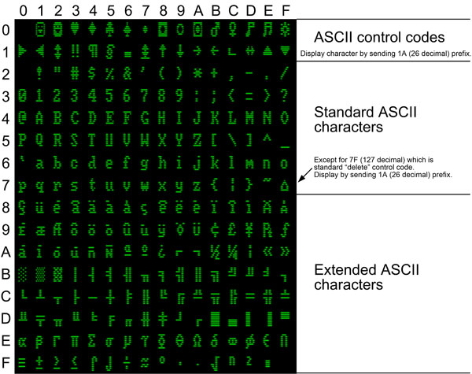
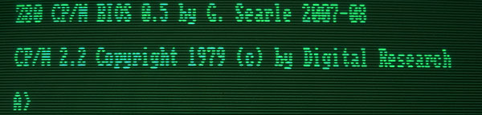

Monitor and keyboard controllers
Controlled by low-cost ATMEL "Mega"
processors
- Project 1: PAL or NTSC multi-mode text and graphics
display with I2C, 4 or 8 bit interface
- Project 2: PC keyboard-->serial and serial-->display interface
- Use both together to allow any project that uses serial I/O to have a screen
and keyboard

(actual picture of screen)
Work on here, unless credited otherwise, is copyright Grant Searle. You are not allowed to publish this elsewhere without my permission. You may use any of this for your personal use, but commercial use is prohibited.
by Grant Searle
For news and updates, follow me on Twitter:Last update: 2nd January 2017
INDEX
Introduction
Performance
Interface coding
Schematics
Prototype
Processing and circuit description
Interface hardware details
Source code
Special characters / control codes
Font attributes
Graphics
Character set
My other pages
This page shows construction details for two cheap and
simple interfaces that can be used individually or together:
1. A complete very fast video controller
2. An interface that allows a PC keyboard and the video controller to be
connected to a computer system via a serial port. The interface runs at 115200
baud (can be altered within the software) giving a very fast display update.
Video controller specification:
Very easy to interface to, fast and requires no
host/external memory.
Character set: Full "CGA" (8x8) character definitions as
used on the IBM PC (DOS).
Screen size: Text - 80x25, 40x25, 80x12, 40x12, Graphics 160x100 or ANY
mix (defined per 1 of 25 rows)
Resolution: 640x200 for 80 char text, 160x100 for graphics
Font sizes are defined for each line. All chars on the same line have the same
font size and style.
Graphics: Any part of the active screen, up to 160x100 pixels. Each pixel
individually addressable. Defined on any of the 25 screen lines.
Video output: Standard composite monochrome video, PAL or NTSC timing,
non-interlaced so no flicker.
Display memory: 2000 chars internal + 25 line attributes - no host memory needed.
Very fast update and scrolling whichever interface is used.
Interface:
8 bit data bus (requires 10 I/O pins), 4 bit data bus (requires 6 I/O pins) or
two-wire (I2C) that uses only 2 pins.
I2C (thanks to
Dave Curran for his guidance
and code on this) supports low (100KHz) and high (400KHz) speed clocks or higher
(1MHz or more easily achievable).
Hardware: Very low cost - two chips - ATmega328 and 74HCT166
Keyboard and serial controller specification:
Serial interface: Fully buffered 115200 baud, handshake on receive, TTL levels.
Keyboard interface: PC PS/2 standard keyboard connector, accepts standard
keyboards made for PCs. Keyboard LED illumination implemented, and allows for
caps lock and num lock.
Hardware: Very low cost - one chip - ATmega88/168/328
Using a separate processor with it's own memory allows the
host processor to have
as much memory available as possible. I have written a minimal-ANSI interpreter
within the interface processor to handle escape sequences so that software can
be set to use an ANSI terminal setting.
So, in effect, using the ATmega processors, I have created a small minimum-ANSI
compatible terminal.
The video controller was created using an ATmega328 processor (or an ATmega32 processor, here). This was based on a design and code produced by Daryl Rictor (he produced a 40x25 display using an ATmega8 and three other ICs). I adapted the code to use the larger memory of the ATmega328 (originally on an ATmega32) and modified it significantly to make an 80 char display and also to support graphics. I modified control code processing and handshaking that avoided two additional ICs. The 2-wire handshaking between the display processor and the IO processor allows correct synchronisation between the processors when transferring serial data to the display processor.
An Arduino shield and library for the video controller part is also being developed by Dave. Check out his blog here.
Real-timed performance figures are shown here (80 char x 25 line screen - very similar speeds for all modes)
| Test case | PAL 8 bit interface |
PAL 4 bit interface |
PAL 2 wire |
NTSC 8 bit interface |
NTSC 4 bit interface |
NTSC 2 wire |
| 150,000 characters sent to the display + 1000 "cursor homes" (to prevent scrolling) |
4.7 seconds 31915 char/sec |
6.3 seconds 23809 char/sec |
8.3 seconds 18072 char/sec |
6.7 seconds 22388 char/sec |
8.9 seconds 16853 char/sec |
11.0 seconds 13636 char/sec |
| Scroll screen 1000 lines (graphics and/or text) |
2.5 seconds 400 lines/sec |
2.5 seconds 400 lines/sec |
2.5 seconds 400 lines/sec |
3.6 seconds 277 lines/sec |
3.6 seconds 277 lines/sec |
3.6 seconds 277 lines/sec |
| Clear screen 1000 times | 2.5 seconds 400 clears/sec |
2.5 seconds 400 clears/sec |
2.5 seconds 400 clears/sec |
3.6 seconds 277 clears/sec |
3.6 seconds 277 clears/sec |
3.6 seconds 277 clears/sec |
| Graphics Using supplied control codes to set 160000 pixels and reset 160000 pixels covering the complete screen (ie. 320,000 pixel operations) |
26.5 seconds 12075 pixels/sec |
37.1 seconds 8625 pixels/sec |
51.6 seconds 6201 pixels/sec 727KHz 2 wire: |
37.6 seconds 8510 pixels/sec |
52.4 seconds 6102 pixels/sec |
68.6 seconds 4664 pixels/sec 727KHz 2 wire: |
Notes:
2 wire performance is for 400KHz clock unless stated. This can be improved
significantly by increasing the 2 wire clock speed.
PAL performance is higher than NTSC because a larger proportion of the time is
free for PAL than NTSC, due to screen refresh rates.
Each graphics pixel set/reset requires 3 bytes to be sent, which is why 8 bit
transfer noticeably faster than 2 wire.
Test conditions:
Host controller: ATmega88 running at 16MHz (identical performance to Arduino Uno
or Nano etc.)
2 wire interface: Standard 400KHz clock speed unless specified
Timing: Externally electronically timed using a Black*Star Apollo 100 Universal
counter-timer.
INTERFACE CODING TO USE THE DISPLAY PROCESSOR
For further details, see the processing and circuit description later on in this page. There are THREE options to interface to the display controller:
4 Bit interface
Hardware requirements
The controller requires 6 pins available:
D0 - D3 - Outputs
AVAIL - Output
ACK - Input
Ensure R6 is connected on the display controller to enable 4-bit transfers.
Controller initialisation
Set D0, D1, D2, D3 and AVAIL to be outputs.
Set ACK to be an input.
Set AVAIL pin to low (0).
Sending a character to the display
Ensure AVAIL is low.
Should already be low, but if not, set it low.
Wait until ACK pin input is low. Once it is, the
display processor is ready.
Place high 4 bits of the character onto D0..D3 output pins.
Set AVAIL to high, to indicate to the display that the high bits
are ready to be read.
Wait until ACK pin input is high. Once it is,
the display processor has read the high bits and is ready.
Place low 4 bits of the character onto D0..D3 output pins.
Set AVAIL to low, to indicate to the display that the low bits are
ready to be read.
8 Bit interface
Hardware requirements
The controller requires 10 pins available:
D0 - D7 - Outputs
AVAIL - Output
ACK - Input
Ensure R6 is NOT connected on the display controller to enable 8-bit transfers.
Controller initialisation
Set D0, D1, D2, D3, D4, D5, D6, D7 and AVAIL to be
outputs.
Set ACK to be an input.
AVAIL can be high or low.
Sending a character to the display
Wait until ACK pin input is the same value as the
AVAIL pin. Once it is, the display processor is ready.
Place the character onto D0..D7 output pins.
Flip the AVAIL pin to indicate to the display that the data is
ready to be read and processed.
I2C (two wire) interface
Only 2 pins needed - SDA and SCL.
The display is at address 01 (can be changed in code).
Use as for any other I2C device, and send 8-bit character codes.
VERSION 2.0 - Now uses an ATmega328 processor instead
of the older ATmega32. The ATmega328 is a cheaper, newer and smaller processor
(28 pin instead of 40 pin). The ATmega32 design (8 bit interface only - frozen) is still available and can be
seen here.
VERSION 2.1 - Now allows a 4 bit or 8 bit display interface. NOTE: Display NTSC
selection moved from PC5 to PD7.
VERSION 2.2 - Two-wire also supported. NOTE: Display shift/load moved from PC5
to PC3, AVAIL moved to PC5, /RTS moved to PC3.
VERSION 3.0 - Graphics and multi-font support use the same pinouts as for 2.2
but now have additional configuration resistors (if needed, can be omitted) -
see note 6 below.
This consists of two modules and when used together produces a generic ANSI terminal (also supporting graphics) using a TTL compatible serial interface running at 115200 baud (can be changed in software) so can be used for any computer project that has a serial I/O and needs a keyboard and display.
This uses an ATmega88 (or 168 pr 328) for the keyboard and serial buffer
and an ATmega328 for the display processor.
Since the display is independent of the host (eg Z80) processor, the host has no processing
overhead so when connected to my CP/M system this system runs much faster than many of the old
systems.
The circuit is in two distinct parts, as shown below. If only a display is needed then only the circuit to the left side of the line is needed.
(NOT SHOWING DEFAULT FONT CONFIGURATION RESISTORS - SEE BELOW)
Note 1: Not all power supply pins are not shown. These must be
connected to the appropriate power rail.
Note 2: Include R3 for NTSC display only, otherwise do not make any
connection between PD7 and ground.
Note 3: Include R6 and also connect PB1 on the interface to ground for
4-bit data ONLY. Do not connect any green wires when using the 4-bit interface.
Note 4: Include R7 and also connect PB2 on the interface to ground for
two-wire ONLY. Do not connect any red or green wires.
Note 5: If a specific display start-up configuration is always used, the
code can be altered (see below) and all configuration
resistors omitted.
Note 6: Default font will be 80 char, single-height, bold. To change it,
pull the following display lines low with 10K resistors:
Pin 6 (PD4) - 40 chars per line if
pulled low via a 10K resistor
Pin 5 (PD3) - Double height if pulled
low via a 10K resistor
Pin 4 (PD2) - Non-bold if pulled low
via a 10K resistor
To illustrate the wiring for the three interfacing options, please see below...
8-bit (suitable for connecting the display to microcontrollers or microprocessors using 10 pins):

4-bit (suitable for connecting the display to microcontrollers or microprocessors using 6 pins):

Two wire (suitable for connecting the display to
microcontrollers supporting I2C):

The code for the serial/keyboard controller is written in C, and the code for the display controller is assembler, significantly modified from Daryl Rictor's original (full credit to Daryl for the original!)
I use the free Atmel AVR studio 7 to compile/assemble the two sets of code.
When using both modules together, ensure the data bus width of the display processor matches the data bus width of the keyboard/serial interface otherwise it will not work.
The two parts of the above schematic (8 bit interface, PAL mode) are constructed as shown here. A resistor links each reset to the power because I program the chips in-circuit.

Note: this picture is for the schematic version 2.1. Minor wiring changes for version 2.2
The system that required the interface (my CP/M design) is
shown to the right. The TX, RX, /RTS and power connections are made between the
interface and the host computer.
The data bus wiring between the display and the interface parts of the circuit can be
seen in blue, handshake between them in orange.
To interface the display to a microcontroller without the keyboard or serial interface requires only the left hand part. The controller needs 4 or 8 output pins for the data, one output pin for the "data available signal" and one input pin for the "acknowledge" pin.
PROCESSING AND CIRCUIT DESCRIPTION
The serial/keyboard controller runs at 11.0592MHz (to coincide with the 115200 Baud serial interface) and the display processor runs at 16MHz.
The serialisation of the video data is done using a 74HCT166 parallel to serial converter.
The sync and video signals are merged using a resistor network which works fine for me and terminates in a standard 75 ohm video input on the monitor.
The keyboard used is a standard "PC" keyboard with a PS/2 connector (NOT USB). Caps lock and num lock works and it updates the keyboard LEDs as needed. Non-ASCII keys return codes, but this isn't finalised yet and is easily changed in the code.
Here is a block diagram of the display and keyboard interface being used together as a serial-driven I/O for a microcomputer system:

ATmega88/168/328 processor (Serial and keyboard I/O)
This buffers the serial input and
stores it in a circular buffer 800 chars in size. The RTS is cleared when less
than 32 character spaces remain in the buffer and is set when there are less
than 32 char spaces used. This is to allow overrun from the sending
system without losing characters.
When a character or command is to be sent to the display processor, the code is
placed on the output port pins.
Some ANSI commands are interpreted and converted to the relevant video processor
commands.
ATmega328 processor (video)
This has 2K RAM so can accommodate an 80x25 char display with some bytes
remaining for workspace. The main processing is transferring data from the
memory to the output serial shifter, and producing the HSYNC and VSYNC signals.
During the inactive time of the display, the input port/status bits can be read
and the incoming data interpreted either as a command or as a character that is
inserted into the display. Scrolling and clearing of the screen is handled
within this processor (very quickly!)
It is mainly Daryl's code in there, but I have adapted it for the ATmega328
processor which has 2K RAM, added some routines of my own and altered the row/col
cursor positioning commands to take a parameter byte instead of using a set of
character spaces and changed the method to allow the display of control-code
characters. This allowed me to modify it to produce an 80x25
display. I also changed the code so that only one timer is needed instead of
two. Additionally the handshaking/data read code was changed to allow me to
interface to the keyboard/serial controller without needing a latch or the other
chips that he used. The dot clock runs at 16MHz to allow an 80 column display to
be shown on a standard video monitor/TV.
An ATmega328 pin (see schematic) determines whether PAL (50Hz) or NTSC (60Hz) display is required. Connect via a resistor to ground for NTSC.
Data transfer between the host (or interface) and
display controllers (applicable
to 4 bit or 8 bit mode).
The two processors must be able to communicate with each other and must wait
for the other processor as needed.
Data transfer is via a 4 bit or 8 bit parallel port.
Handshaking between the processors is achieved with two lines - the "Data
Available" line and the "Acknowledge" line.
The serial/keyboard processor uses the two handshake lines to see if data can be sent to the
display.
The display processor uses the two handshake lines to see if data has been sent.
The handshake is the same for 4 or 8 bit transfers, although the meaning is slightly different...
8 bit transfers
Host controller:
The host (serial/keyboard processor) waits until the "Acknowledge" line matches the "Data Available" line. Once it does, the data is placed on the output port and the "Data Available" line is flipped (ie. 0 to 1 or 1 to 0).Display processor:
If the "Data Available" does NOT match the "Acknowledge" line then data has been sent so the data input is read and the "Acknowledge" line is flipped ONCE DATA HAS BEEN READ. Therefore once data transfer is complete, the "Acknowledge" and "Data Available" lines will have the same value.
This data is then processed.
4 bit transfers
Host controller:
(The host (serial/keyboard processor) has AVAIL set as low when initialised. This will remain low when idle in 4 bit mode)
It waits until the "Acknowledge" line matches the "Data Available" line (LOW). Once it does, the HIGH 4 BITS of the data is placed on the output port and the "Data Available" line is set HIGH.
It waits until the "Acknowledge" line matches the "Data Available" line (HIGH). Once it does, the LOW 4 BITS of the data is placed on the output port and the "Data Available" line is set LOW.Display processor:
If the "Data Available" does NOT match the "Acknowledge" line then data has been sent so the data input is read and the "Acknowledge" line is flipped ONCE DATA IS READ. If the AVAIL is high then the 4 bits read are stored in the high 4 bits of a buffer byte but not processed (because data transfer is not yet complete). If the AVAIL is low then the 4 bits read are stored in the low 4 bits of a buffer byte which then completes the byte transfer. This complete 8-bit value is then processed.
To demonstrate this, please refer to the following:

I2C (two wire) transfers
Standard I2C interfacing at high speeds (more than 1MHz if needed). The display processor is set in code to be I2C address 01. Change the code if different address is needed.
Refer to the microcontroller datasheet that the display is connecting to for more information.
Note - 18th September 2013 - Code updated to utilise
swapped pins for the AVAIL, Shift/load and /RTS.
27th September - additional config pins for start-up font.
If using latest software here, you MUST ensure you are using the connections as
shown in the schematic above.
Coding based on the original code produced by Daryl Rictor
Many thanks to Dave Curran for providing me with the two-wire code for the display processor.
Commented source code and HEX files for the serial/keyboard processor and display processor (or previous version for ATmega32) processors are HERE.
There is an I2C issue if data stream not left open - so, if using I2C, don't close the stream otherwise some data may be lost.
When programming the ATMEL processors, ensure the appropriate fuse bits are set (see documentation/programmer details) as these need to use the following settings:
A crystal (XT) clock (must be rail to rail for the display controller)
No watchdog timer
No clock divider
JTAG disabled
OCD disabled
No boot program
Must use XT rail-to-rail clock for the video processor because this also clocks the 74HCT166 (as permitted in the ATMEL datasheet).
Suitable fuse settings for the two controllers are as follows (please refer to datasheets for info)...
For the 328P interface chip:
Low: 0xFF
High: 0xD9
Extended: 0xFF
The 328P display chip must be set to rail-to-rail crystal operation, so the fuse bytes for that would be:
Low: 0xF7 (ie. CKSEL3 = 0)
High: 0xD9
Extended: 0xFF
The source and HEX files provided are for the flexible-startup option where external pull-downs are used to determine the operating mode. To simplify the circuit, these can be omitted and the code altered (minor change) if a specific configuration is always used at start-up.
Within SBCVideo.ASM I have already included the lines to change...
; HARD CODED OVERRIDE IF
PREFERRED
; ldi J, 1<<CONFIG_PAL | 0<<CONFIG_8_OR_4_BIT | 1<<CONFIG_N_TWI |
1<<CONFIG_80_CHAR_PER_LINE | 1<<CONFIG_SINGLE_HEIGHT | 0<<CONFIG_BOLD
; mov configByte,J
Remove the ";" comment characters from the start of the "ldi"
and "mov" lines and set the bits as needed. This will completely override the
pull-down resistors so none of them are needed.
CONFIG_PAL = 1 for PAL or 0 for NTSC
CONFIG_N_TWI = 0 for two-wire, otherwise 4/8 bit will be used
CONFIG_8_OR_4_BIT = 1 for 8 bit or 0 for 4 bit (if two-wire has not been
selected)
CONFIG_80_CHAR_PER_LINE = 1 for 80 char, 0 for 40 char
CONFIG_SINGLE_HEIGHT = 1 for normal, 0 for double-height
SPECIAL CHARACTERS / CONTROL CODES
Standard ASCII is implemented for the main character set. Extended ASCII codes are implemented the same as for DOS. Control codes are standard ASCII where applicable - other codes added to allow control of the screen. The full implementation is shown below:
Video display control codes:
Hex (Decimal) and meaning
01 (01) - Cursor home (Standard ASCII)
02 (02) - Define cursor character (2nd byte is the curs character, or 00 to turn
off) <--New for 3.0
03 (03) - Cursor blinking
04 (04) - Cursor solid
05 (05) - Set graphics pixel (next two bytes = x,y)
<--New for 3.0
06 (06) - Reset graphics pixel (next two bytes = x,y)
<--New for 3.0
08 (08) - Backspace (Standard ASCII)
09 (09) - Tab (Standard ASCII)
0A (11) - Linefeed (Standard ASCII)
0C (12) - Clear screen (Standard ASCII)
0D (13) - Carriage return (Standard ASCII)
0E (14) - Set column 0 to 79 (2nd byte is the column number) or 0 to 39 for
a 40 char line
0F (16) - Set row 0 to 24 (2nd byte is the row number)
10 (16) - Delete start of line
11 (17) - Delete to end of line
12 (18) - Delete to start of screen
13 (19) - Delete to end of screen
14 (20) - Scroll up
15 (21) - Scroll down
16 (22) - Scroll left
17 (23) - Scroll right
18 (24) - Set font attribute for the current line (see
elsewhere on this page for details) <--New for 3.0
1A (26) - Treat next byte as a character (to allow PC DOS char codes 1 to 31 to
be displayed on screen)
1B (27) - ESC - reserved for ANSI sequences
1C (28) - Cursor right
1D (29) - Cursor Left
1E (30) - Cursor up
1F (31) - Cursor down
20 (32) to 7E (126) - Standard ASCII codes
7F (127) - Delete
80 (128) to FF (255) - PC (DOS) extended characters
So, to print "Hello" at column 18, row 10 on the monitor
in BASIC would be as follows:
PRINT CHR$(14) ; CHR$(17) ; CHR$(15) ; CHR$(9) ; "HELLO"
Some ANSI/VT100 escape sequences have been implemented to
allow programs such as Wordstar etc. to run on the CPM machine. The ones
implemented are shown below (Esc = character 1B Hex, 27
decimal):
Esc[Line;ColumnH or
Esc[Line;Columnf moves cursor to that coordinate
Esc[J=clear from cursor down
Esc[1J=clear from cursor up
Esc[2J=clear complete screen
Esc[K = erase to end of line
Esc[1K = erase to start of line
Esc[L = scroll down
Esc[M = scroll up
Esc- = turn off ANSI interpreter - NEEDED IF USING GRAPHICS otherwise
char 1B can't be sent to the display <--New for
3.0
The above example can also be implemented using escape
sequences instead...
PRINT CHR$(27) ; "[18;10H" ; "HELLO"
The character font is not the same as supplied by Daryl. I recreated the complete normal and bold fonts from a bitmap of 8x8 characters for a CGA PC display (using a small VB program). Most appear identical, so I assume we used a similar source. However, I have included all characters, including those normally reserved for control codes.
ASCII codes 00 to 1F (and 7F) are reserved for control.
However, the character map also has display characters with these values. These
characters can be displayed by sending code 1A (26 decimal) before sending the
code for the character. This prefix tells the display processor to store the
actual character into the display and not treat it as a control code.
eg. in BASIC, to display the heart symbol (at 03) you can use the following...
PRINT CHR$(26) ; CHR$(3)
Each line can have it's own font defined.
Cannot have mixed font types on the same line.
This can be:
40 Character normal
80 Character normal
40 Character bold
80 Character bold
40 Character normal double-height
80 Character normal double-height
40 Character bold double-height
80 Character bold double-height
This is illustrated here:

When "double height" is specified, internally, the
current line gets set to "double-height top-half" and the following line gets
the same font definition and "double-height bottom-half".
The screen is always addressed as row 0..24, with double-height covering two
rows.
The font attribute byte is defined as follows:
| 7 | 6 | 5 | 4 | 3 | 2 | 1 | 0 |
| Graphics | Spare | Spare | Spare | Spare | Double height | Bold | 80 chars |
So, bold 80 char normal height is 0b0000011, or 0x03, normal 40 char is 0x00000000, or 0x00 etc.
To set it, send 0x18 (see above) followed by the attribute number to the display.
When characters on a line overflow onto the following line OR a linefeed is issued, the following line will also be set to the same font definition - no need to reset at each line.
When a cursor is put on a line (cursor up/down or set row command) the active font becomes whatever was on that line, so no need to reset the font to match the current line.
When a font select is sent, the current line will be set to that font (plus the lines that follow if text flows over the end, as described above).
When a clear screen is issued, the complete screen will take on the current font selection as default.
For double-height lines, the line position used is that
line occupied by the top-half of the text.
Repositioning the cursor on to the second line of a double-height line will give
strange results, because that will be reset to be top of a double-line.
Full 160x100 bitmapped graphics are supported. Two functions are included to set and reset pixels.
Whenever a set pixel or reset pixel command is issued, the X/Y coordinates determine which display line needs to be used for graphics. This is automatic, so no need to set graphics line attributes. If the line is currently set for text then the line is automatically cleared before setting the pixel.
Pixel coordinates are X = 0..159, Y = 0..100
Part of a screen is shown here:
So, Y=0..3 will occupy the space where the top text line would normally appear, 4..7 the next display line etc. The complete horizontal line becomes graphics mode.
To set a pixel, send 0x05, X, Y as three bytes.
To reset a pixel, send 0x06, X, Y as three bytes.
Internally, graphics are held as character blocks with each bit assigned as follows
| 0 | 1 |
| 2 | 3 |
| 4 | 5 |
| 6 | 7 |
So, instead of set/reset pixel, the cursor can be positioned on the line, the attribute then set to 0x80 (graphics) and individual characters sent as would be done for text lines. eg. a block with pixels 0,4,5 and 7 set would be 0b10110001, or 0xB1
Ensure the cursor is either turned off, or not positioned on a graphics line otherwise pixels will flash where the cursor is positioned.
The full character set (showing PC CGA 80 char bold), exactly as displayed, is shown here:

A close-up of an example display (running on my home-designed CP/M computer) on a green-screen PAL CRT monitor is shown here:

(brightness turned up so that you can see the scanlines - normally black
background)
CLICK HERE TO GO TO MY MAIN PAGE FOR MY OTHER PROJECTS
I hope this page has been useful.
Grant.
To contact me, my current eMail address can be found here. Please note that this address may change to avoid spam.
Note: All information shown here is supplied "as is" with no warranty whatsoever, however, please let me know if there are any errors. All copyrights recognised.